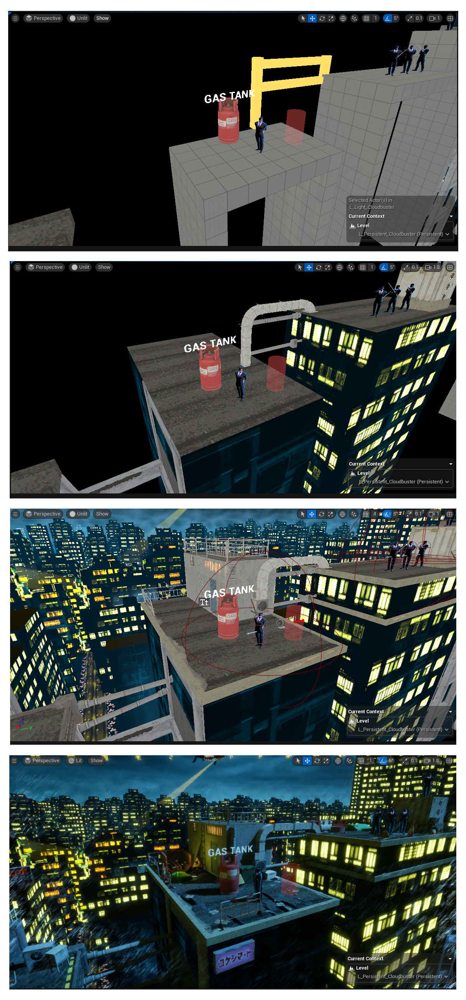
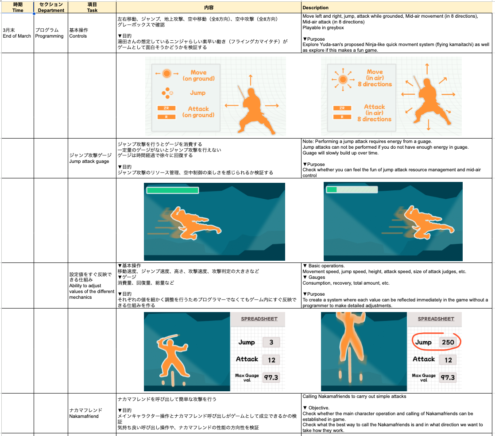

Ninja Slayer
Ninja Slayer was a fast paced project, both in game play and turn around. Working under a veteran of the Japanese game industry our small team converted the clients IP into a Japanese action hit.
Spec Sheets
This project followed the Japanese creation process of outlining the entire game from start to finish into an excel sheet.
In the below sheet you can see the stages broken down into how the level and then the boss fight will play out. Each stage was designed in advance using the traits and elements from the manga.
For each moment of gameplay I would ask "What should the player be feeling here" or "How can the fans enjoy this moment".
Designing the game entirely on paper first before implementation was tough for me, and although I believe it did improve my documentation style I beleive a more western approach of in-engine iteration is key to a succesful game
Ninja Slayer Level and Boss Specifications
Level Building
Once the design documentation had been completed and signed off by the stake holders, it was up to me to work with our artist and programmer to implement the ideas into a reality.
You can find my detailed level building bible below, which outlines the construction process.
Ninja Slayer Level Creation Bible

Production
Although hard to show in a portfolio, a major part of this role was supporting the projects production by being in charge of task tracking and multi lingual meeting managment.
It was my responsibility to manage the expectations of the client, the time budget of the team and ensure that team members who did not share a common language where still on the same page.
